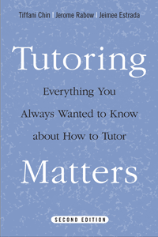

The authoritative manual for both the aspiring and seasoned tutor
The authoritative manual for both the aspiring and seasoned tutor


 The authoritative manual for both the aspiring and seasoned tutor
The authoritative manual for both the aspiring and seasoned tutor

|  |
Tutoring MattersEverything You Always Wanted to Know about How to TutorSecond EditionTiffani Chin, Jerome Rabow and Jeimee Estradapaper EAN: 978-1-43990-741-2 (ISBN: 1-4399-0741-2) |
"For the past ten years, my students repeatedly cited Tutoring Matters—in their journals, papers, and course evaluations—as their single most helpful tutoring resource. With the timely addition of so many field-tested and practical tips, this second edition will certainly prove itself to be even more valuable."
—Joseph A. Galura, University of Michigan
Tutoring Matters is the authoritative guide for both the aspiring and seasoned tutor. Using firsthand experiences of over one hundred new and experienced college student tutors, the authors offer techniques for handling tutoring anxieties, teaching strategies, and tips for building relationships.
This new edition has been fully updated to help tutors to engage the interest of their students. In addition, it features practical “tip boxes” that provide quick-reference guidelines on a range of tutoring challenges—from making a connection in your first tutoring session to becoming familiar with your pupil's life and tutoring needs. This new edition also provides practical experience-based tips "from the trenches" about how to tutor math and reading and how to help students develop other academic skills and interests.
Excerpt available at www.temple.edu/tempress
Preface to the Second Edition and Acknowledgments
Preface to the First Edition and Acknowledgments
Introduction
1. Attitudes, Anxieties, and Expectations
2. Building Relationships
3. Teaching Techniques
4. Race, Gender, Class, and Background Differences
5. Other Adults: Parents, Teachers, and Administrators
6. Good-byes: Ending the Tutoring Relationship
Twenty-Five Final Pointers for Tutors
To the Reader
Bibliography
Tiffani Chin is the Executive Director of EdBoost, a nonprofit that includes a learning center serving K-12 students in Los Angeles. She is the author of School Sense: How to Help Your Child Succeed in Elementary School, and she has been tutoring for twenty years.
Jerome Rabow, the recipient of numerous distinguished teaching awards, is Professor Emeritus of Sociology at the University of California, Los Angeles, and a Lecturer at California State University, Northridge. He is the author of Voices of Pain and Voices of Hope: Students Speak about Racism. Rabow is the Director and Co-founder of CCODE (Center for the Celebration of Diversity Education).
Jeimee Estradais a K-12 Education Policy Analyst with the California Legislative Analyst’s Office and a Master of Public Policy graduate from the University of Southern California.
© 2015 Temple University. All Rights Reserved. This page: http://www.temple.edu/tempress/titles/1477A_reg.html.